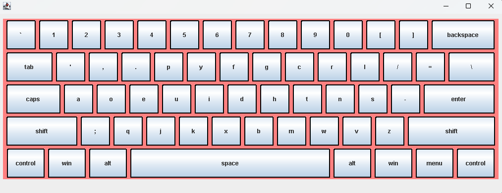

![[Image of custom keyboard with output showing keys pressed.]](../images/modelkeyboard.png)
About:
I started this project to attempt to use Java (I didn't have much experience before). The keyboard can change sizes and use different layouts easily- each button was created in order to have a set spacing modeled by a real keyboard no matter how big or small the keyboard gets.
How it works:
The project was made with Swing in eclipse, and essentially sets up some variables to determine the screen size and what the size of the model keyboard will be under it. / Then the buttons are created in a way for the 5 rows to be created with flowlayout and each row individually with gridbaglayout. / The buttons are all added automattically except if it's a certain button out of the index- in which it creates a custom size (the spacebar or shift for example). / The keyboard detects user input and will print it to the log while also making a slight activated appearance for the buttons on the actual keyboard. The key features I like are the resizabillity and the ease in changing the keyboard layout.
Flaws:
Many of the changes will require the user to restart the program and alter the single bits of data which wouldn't be intuitive for most cases- it's not created for most users.
Learned:
This project taught me a ton about Java, along with how to use the eclipse IDE and how it's UI elements work. I also learned a lot about Object Oriented programming.
Plans:
I plan on one day taking this project to the next level by integrating with other programs along with making it more user friendly.
Used:
- Java
- Eclipse
- Swing for Java
- Windows